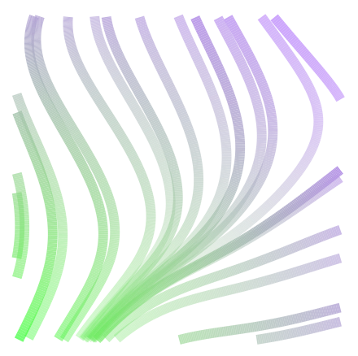

Matt Motoki
I am a second-year Ph.D. student in the Electrical & Computer Engineering Department at the University of Washington, advised by Baosen Zhang. My research interests lie at the intersection of machine learning, power systems, and sustainability. In the past, I’ve worked in industry as a data scientist.
Dark Mode
Projects

Cell Division: A Biology-Inspired Board Game with an AI Opponent
Game / GitHub
Cell Division is a strategy-based board game. Players take turns placing their cells. A player’s cells divide when they connect with each other. The score is equal to the total number of cells. The game ends when the board is full. The winner is the player with the most cells.
Game / GitHub
Cell Division is a strategy-based board game. Players take turns placing their cells. A player’s cells divide when they connect with each other. The score is equal to the total number of cells. The game ends when the board is full. The winner is the player with the most cells.
Cell Collection: Variations of Cell Division
Game / GitHub
This is a collection of games inspired by Cell Division. If a player places a new cell adjacent to one or more of their existing cells, then their existing cell(s) extend to include the new cell. This is a work in progress and I plan to implement various scoring mechanisms.
Game / GitHub
This is a collection of games inspired by Cell Division. If a player places a new cell adjacent to one or more of their existing cells, then their existing cell(s) extend to include the new cell. This is a work in progress and I plan to implement various scoring mechanisms.

Hawaii Machine Learning Meetup
Website
I helped to create the Hawaii Machine Learning Meetup with the goal of increasing ML adoption in Hawaii. As an organizer, I grew the community to 250+ members and helped to lead networking events and ML study groups.
Website
I helped to create the Hawaii Machine Learning Meetup with the goal of increasing ML adoption in Hawaii. As an organizer, I grew the community to 250+ members and helped to lead networking events and ML study groups.
Competitions
In my free time, I enjoy competing in machine learning competitions. I am a competitions grandmaster on Kaggle.-
6th Place in the Enefit - Predict Energy Behavior of Prosumers Challenge (2024)
Write-Up /
Website
Team Members: Matt Motoki. Prize Money: $5,000 -
1st Place in the NeurIPS CityLearn Challenge - Forecasting Track (2023)
Slides /
Code /
Website
Team Members: Matt Motoki. Prize Money: $1,000 -
2nd Place in the Net Load Forecasting Prize (2023)
Website
Team Members: Matt Motoki. Prize Money: $150,000 -
Phase 1 Winner in the Digitizing Utilities Prize (2023)
Demo /
Website
Team Members: Matt Motoki, Sorapong Khongnawang, Daniel Tabas, Baosen Zhang, Olin Lagon. Prize Money: $75,000 -
2nd Place in the NeurIPS CityLearn Challenge (2022)
Paper /
Code /
Presentation /
Website
Team Members: Matt Motoki, Sorapong Khongnawang. Prize Money: $5,000 -
Runner Up in the Solar Forecasting Prize (2022)
Website
Team Members: Matt Motoki. Prize Money: $25,000 -
Winner in the Recidivism Forecasting Challenge (2021)
Write-Up /
Website
Team Members: Matt Motoki, Marifel Barbasa, Sorapong Khongnawang. Prize Money: $48,500 -
1st Place in the Great Energy Predictor III (2019)
Presentation /
Write-Up /
Website
Team Members: Isamu Yamashita, Matt Motoki. Prize Money: $10,000
Generative Art Experiments
I think generative art is pretty interesting. I've been playing with different techniques and ideas. These pieces are still rough, but they were fun to make.
City Lights
Code
The code creates a stylized city skyline with randomly placed and sized buildings. The buildings have windows with varying yellow hues, giving the impression of a cityscape at night with illuminated windows.
Code
The code creates a stylized city skyline with randomly placed and sized buildings. The buildings have windows with varying yellow hues, giving the impression of a cityscape at night with illuminated windows.

StreamLines
Code
The code generates a streamline plot using Perlin noise, which creates a smooth, organic pattern. The noise values and their gradients are computed on a grid, and the resulting data is used to draw streamlines with varying colors and transparency.
Code
The code generates a streamline plot using Perlin noise, which creates a smooth, organic pattern. The noise values and their gradients are computed on a grid, and the resulting data is used to draw streamlines with varying colors and transparency.

Silhouette
Code
The code combines Perlin noise to create a mountain-like silhouette and a color gradient using the viridis palette. The points are created within a grid system with their color determined by position. The silhouette is formed by calculating the intersection of polygons.
Code
The code combines Perlin noise to create a mountain-like silhouette and a color gradient using the viridis palette. The points are created within a grid system with their color determined by position. The silhouette is formed by calculating the intersection of polygons.

Light Rain
Code
This piece was inspired by Marius Watz's Blocker series. The code draws semi-transparent rectangles with colors and positions determined by Perlin noise. The final color palette is a blend from separate noise patterns.
Code
This piece was inspired by Marius Watz's Blocker series. The code draws semi-transparent rectangles with colors and positions determined by Perlin noise. The final color palette is a blend from separate noise patterns.